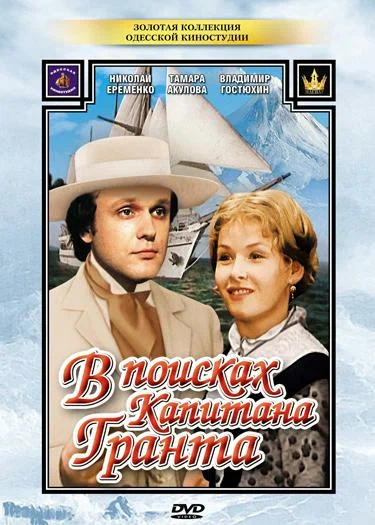

В поисках капитана Гранта

Год производства
1985
Режиссер
Станислав Говорухин
Страна
CCCР, Болгария
Сайт для просмотра
8.2
Обзор
Капитан Грант пустился в опасное плавание, чтобы основать вольное
шотландское поселение на островах Тихого океана. Но его корабль терпит
крушение, и лишь полуразмытая записка в бутылке доносит обрывочные
сведения о Гранте. Лорд Гленарван на свой страх и риск отправляется на
поиски, взяв с собой детей капитана - Мэри и Роберта. Путь отважных
путешественников лежит через острова Атлантики, горы и пампасы Новой
Зеландии и Австралии, просторы Тихого океана, где их поджидают
всевозможные приключения.